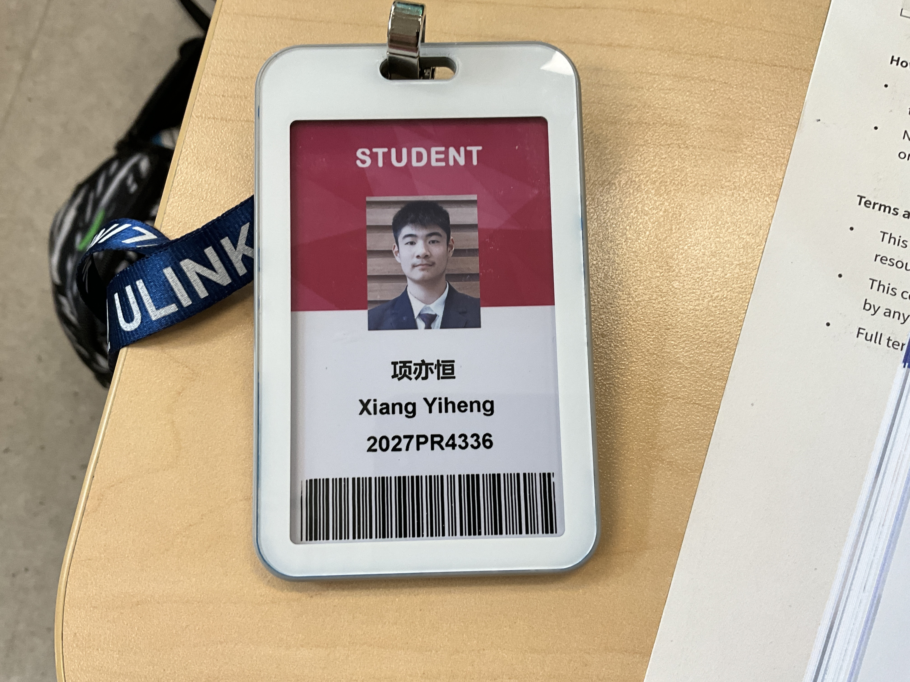
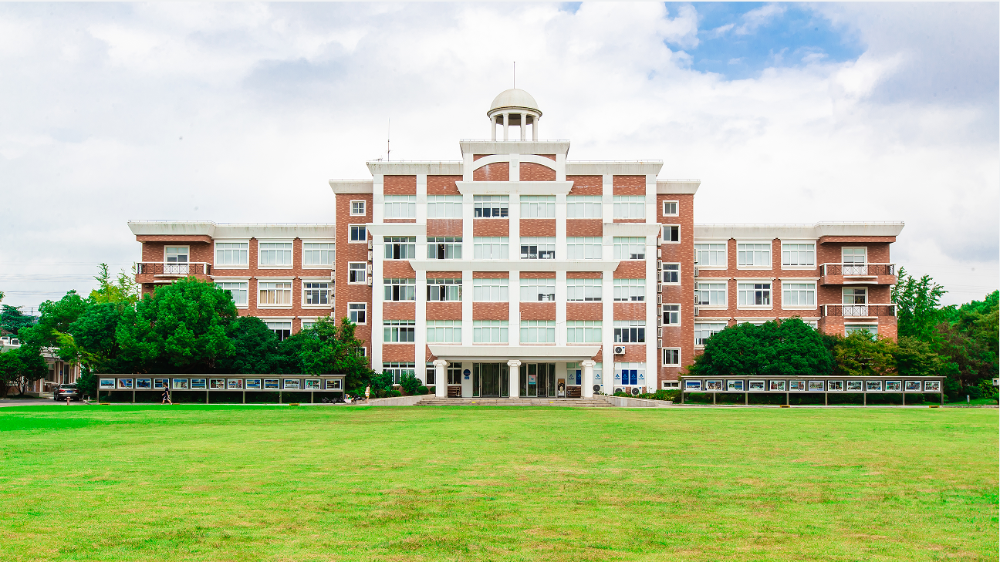
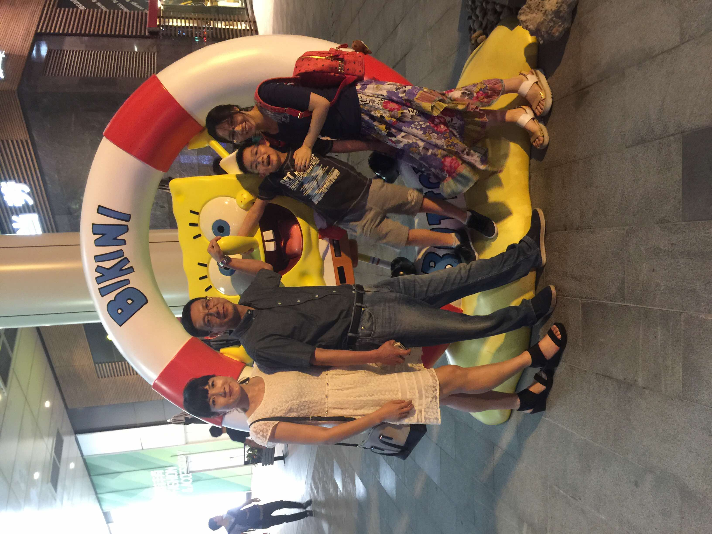

I study at Ulink College of Shanghai, currently deep in Cambridge International exams, and aiming for a place at a top UK university. This site is the short version of that story — part application portfolio, part website I just wanted to build.


Ulink College of Shanghai was founded in 2005 in the city's Songjiang district and was among the first schools in mainland China authorized to teach the Cambridge A-Level curriculum. It now runs Cambridge IGCSE and A-Level, IB Diploma, and SABIS pathways side by side, with every class taught in English.
I'm working through the Cambridge International (CIE) curriculum myself — a demanding few years that recently wrapped up with the CIE examinations. Before Ulink, I was at Ningbo Xingning Middle School, back home in Zhejiang.
Two very different fields. Same habit of showing up prepared.
First Prize in the Youth Robot Design Competition, held alongside the World Robot Conference in Beijing and organized by the Chinese Institute of Electronics — an event often called the "Olympics" of robotics. The category rewards hands-on build quality and engineering strategy as much as raw technical skill.
Competed in the NEC, the United States' most prestigious high-school economics competition, run by the Council for Economic Education. Rounds move from microeconomics to macroeconomics to international trade and live current events, testing theory under real time pressure.
Deeply rooted in Ningbo, Zhejiang — the anchor that makes chasing an education on the other side of the world feel possible. Three people hear about every result before anyone else does.

The steady, quiet strategist. First call after every exam and every competition result, win or lose.
Keeps the whole operation running — the person who somehow remembers every deadline before I do.
A few steps ahead on the path. First for advice, first to celebrate the wins.
Ulink sends its graduates all over the world, and most UK-bound leavers land at a G5 university — Oxford, Cambridge, Imperial College London, UCL, or LSE. That's the target.
Coursework and finals wrapped up — the last big hurdle before applications.
Personal statement, references, five course choices — submitted through UCAS.
Waiting, interviewing where required, and hopefully collecting offers.
Results day. Firm and insurance choices confirmed.
Move-in day at a UK G5 university.